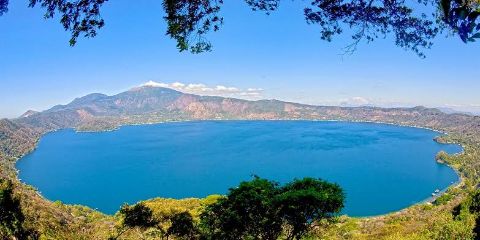

Turistea sv
INICIO
DESTINOS
FAVORITOS
PLANIFICA TU VIAJE
NOSOTROS
Buscar
Ven y conoce los detinos en las siguientes regiones
Ruta de las Flores
Ver más Destinos en la región
Lago de Coatepeque

Ver más Destinos en la región
Costa del Bálsamo (Surf City)
Ver más Destinos en la región
Suchitoto y el norte
Ver más Destinos en la región
Ruta de Paz (Morazán)
Ver más Destinos en la región
San Salvador y alrededores
Ver más Destinos en la región
Oriente y Golfo de Fonseca
Ver más Destinos en la región